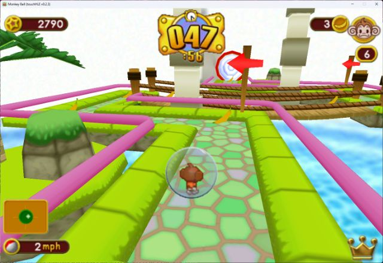
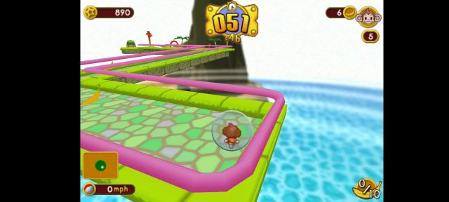
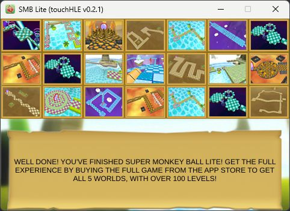
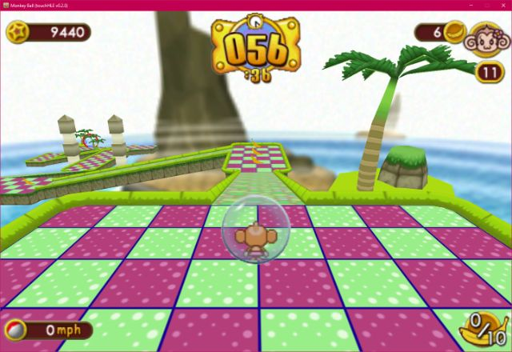

| App name | Super Monkey Ball |
|---|---|
| Release year | 2008 |
| Developer/Publisher | Other Ocean Interactive / SEGA |
| First reported | |
| First reported by | @hikari-no-yume |
| Version number | Display name | Bundle identifier | Minimum iOS version | Best rating | Last updated | First reported by | |
|---|---|---|---|---|---|---|---|
| 1.0 | SMB Lite | smblite | 2.0 | ⭐️⭐️⭐️⭐️⭐️ | @nighto | ||
| 1.0.2 | Monkey Ball | com.ooi.supermonkeybal | 2.0 | ⭐️⭐️⭐️⭐️⭐️ | @Very-Funny-Man | ||
| 1.3 | Monkey Ball | com.ooi.supermonkeyball | 2.0 | ⭐️⭐️⭐️⭐️⭐️ | @hikari-no-yume |
| Version number | touchHLE version | Operating system | GPU | Scale hack supported? | Rating | Reported | Reported by | Remarks | Screenshot |
|---|---|---|---|---|---|---|---|---|---|
| 1.3 | v0.2.3 | Windows 11 23H2 | RTX 2060 | Yes | ⭐️⭐️⭐️⭐️ | @BlendKitty | Everything I tested works. I played from the tutorial to Level 6 with no issues, and scale hack works properly with no graphical issues. On both mouse and controller, the gyroscope is slightly off no matter what, making your character always move right. | View | |
| 1.0.2 | v0.2.3 | Android 13 | Mali-G52 MC2 | Yes | ⭐️⭐️⭐️⭐️⭐️ | @Very-Funny-Man | The game runs perfectly, including scale hack and tilt controls. | View | |
| 1.0 | 0.2.2 | Raspberry PI OS (Using Wine 9.3 with box64) | Raspberry PI 4B | Didn't test | ⭐️⭐️⭐️⭐️⭐️ | @corped12 | Works perfectly with Joycons (im not sure it was this version) | ||
| 1.0 | v0.2.1 | Windows 11 | NVIDIA Quadro T2000 | Yes | ⭐️⭐️⭐️⭐️⭐️ | @nighto | Plays perfectly fine, tested until finishing Lite levels. | View | |
| 1.3 | v0.2.0 | Windows 10 22H2 | NVIDIA GTX 1070 | Yes | ⭐️⭐️⭐️⭐️⭐️ | @hikari-no-yume | View |
| Rating | Description |
|---|---|
| ⭐️ | Completely broken: app crashes immediately without any user interaction. |
| ⭐️⭐️ | Only (part of) the main menu, intro or similar is working. |
| ⭐️⭐️⭐️ | Some of the main content of the app works, but with major issues. |
| ⭐️⭐️⭐️⭐️ | The main content of the app works (e.g. entire game is playable) with only small issues. |
| ⭐️⭐️⭐️⭐️⭐️ | Everything works. The app is fully usable. |



